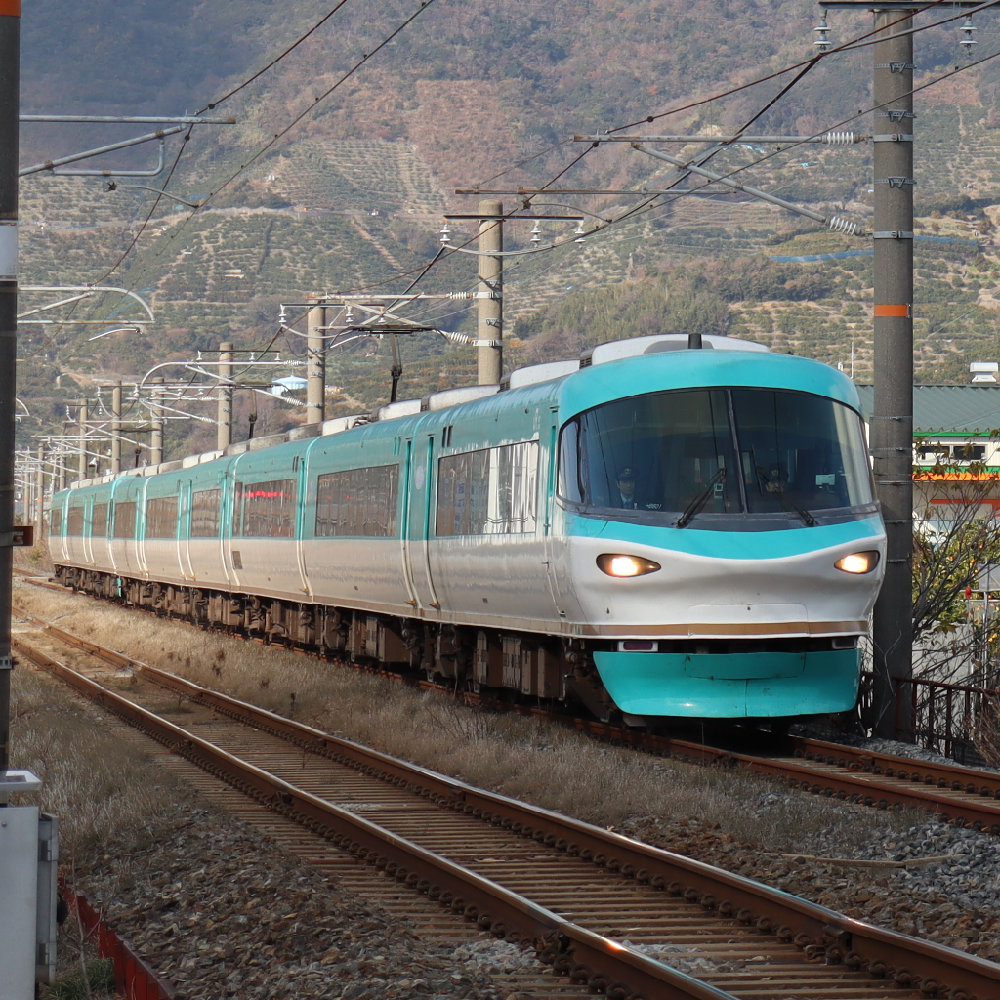

Bot
各Webサイト
取得したアーカイブをより簡単に・素早く閲覧できるように、OkiMAPやOkiCAM等の便利なWebサイトを運用しています。

Member Profile
技術局主任。Oki Archive Bot等のアーカイブ関連業務を中心に活動しています。
About
Bot
取得したアーカイブをより簡単に・素早く閲覧できるように、OkiMAPやOkiCAM等の便利なWebサイトを運用しています。
Bot
2025年8月上旬から、1時間ごとに取得し続けているアーカイブ画像をDiscordに配信します。自宅のRaspberry Piから動作させることで、安定化と保全性の向上を図っています。
Infra
自宅のRaspberry Piを活用し、Wplaceの情報収集や巨大作品の進捗状況などの他のメンバーが作成したBotの運用環境を提供しています。
Systems
とにかくラズパイ。しみじみラズパイ。アーカイブの取得から配信まで、ラズパイを中心にシステムを構築しています。安定性と保全性を重視しています。
一番得意なPythonでのコーディングがほとんどです。手が届くところに運用環境があるという強みを活かして、沖ノ鳥島を支えています。
Works
Links